Next: 混合効果モデルへのベイジアンアプローチ Up: 経時的繰り返し測定デザイン Previous: 臨床試験への混合効果モデル：ロジスティック回帰モデル
てんかん患者に対する抗てんかん薬のプラセボ対象RCTのデータ
本文では，ベースライン期間を2週間あたりの発作回数にするために4で割った値がプロットされている5。
> ### 第9章：Poisson回帰モデル
> data("epilepsy", package="HSAUR2")
> data9.1B <- epilepsy # もともとベースラインデータがbaseとして用意されている
> head(data9.1B)
treatment base age seizure.rate period subject
1 placebo 11 31 5 1 1
110 placebo 11 31 3 2 1
112 placebo 11 31 3 3 1
114 placebo 11 31 3 4 1
2 placebo 11 30 3 1 2
210 placebo 11 30 5 2 2
> # ロングフォーマットへの変更
> levels(data9.1$subject)
[1] "1" "2" "3" "4" "5" "6" "7" "8" "9" "10" "11" "12" "13" "14" "15" "16" "17" "18"
[19] "19" "20" "21" "22" "23" "24" "25" "26" "27" "28" "29" "30" "31" "32" "33" "34" "35" "36"
[37] "37" "38" "39" "40" "41" "42" "43" "44" "45" "46" "47" "48" "49" "50" "51" "52" "53" "54"
[55] "55" "56" "57" "58" "59"
> data9.1base <- data9.1B[as.numeric(row.names(data9.1B)) < 60,]
> data9.1base$period <- factor(0)
> data9.1base$seizure <- data9.1base$base
> data9.1B$seizure <- data9.1B$seizure.rate
> data9.1base$seizure.rate <- data9.1base$base/4 # ベースラインは8週，他は2週
> data9.1base$time <- 8 # ベースライン8週をデータ化
> data9.1B$time <- 2 # 治療期間2週をデータ化
> data9.1 <- rbind(data9.1base, data9.1B)
> data9.1 <- data9.1[order(data9.1$subject),]
> data9.1 <- data9.1[,-2]
> head(data9.1)
treatment age seizure.rate period subject seizure time
1 placebo 31 2.75 0 1 11 8
116 placebo 31 5.00 1 1 5 2
110 placebo 31 3.00 2 1 3 2
112 placebo 31 3.00 3 1 3 2
114 placebo 31 3.00 4 1 3 2
2 placebo 30 2.75 0 2 11 8
>
> # 反応プロファイルの図示
> library(ggplot2)
> ggplot(data=data9.1)+
+ geom_line(aes(x=period, y=seizure.rate, group=interaction(subject, treatment),
+ colour=treatment), size=0.5)
Poisson回帰モデルでは，発作回数の期待値に対して，加法モデルではなく乗法モデルを仮定する。 つまり，発作回数の期待値の対数変換に対して加法モデルを仮定すると考えればよい。

ただし，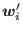 は共変量ベクトルであり，
とする。
個体間差  が与えられれば 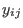
は独立である，と仮定している。
が与えられれば 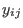
は独立である，と仮定している。
切片の個人差のみ考慮しているということは，複合対称な分散共分散行列
を仮定しているということ。 このとき，個人内では 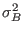 は無関係であるから， は独立ということになる。
仮に，単一事例研究で個人間差でなくセッション間差を考える場面であったとしよう。この場合，が所与のもとで が独立であるという仮定はどれくらい妥当なのだろうか？
上記のモデルでは時点を表すダミー変数 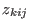 も入っているから，正確には
それでも，前の時点で「その日の体調や環境からは予測できないほどたまたま発作の回数が多かった」ということになれば，その後の時点にも時間とともに少しずつ消滅していくような効果が残るのではないだろうか？ その場合，明らかに は
ただし，

とする。
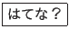
テキストでは，モデルIIは複合対称（モデルI）と無構造（モデルIII）の中間であるとされていた。モデルIIでは， 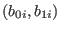 の相関係数として 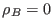 と 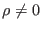 の2つを試しているが，この2者で 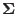 はどのように変わるのだろうか？
正規モデルでは，と の相関係数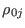 は，
| 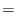 | 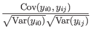 | ||
| 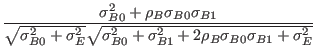 |
であり，治療期間における観測値 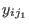 と 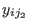 の相関は，
となっていた（本文P.36）。
もし なら，それぞれ
となる。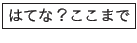
「 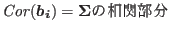 」 ではないので注意。（ には 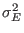 も入っている。）
ここで， 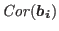 は無構造 or 独立の2者選択ではないので注意。
テキストでは無構造と独立の2パターンしか試していないが，いずれも極端すぎるのではないだろうか？
RによるモデルIの推定
治療群の統制群に対する，治療最終時点でのベースライン時点に対する，単位時間あたり発作回数の変化を線形対比によって推定。
> # モデルI
> fit9.1 <- glmer(seizure~age+treatment*dummy(period)+(1|subject),
+ data=data9.1, offset=log(time), na.action=na.omit,
+ family=poisson,
+ glmerControl(optimizer="bobyqa",optCtrl = list(maxfun=2e4)))
> summary(fit9.1)
Generalized linear mixed model fit by maximum likelihood (Laplace Approximation) ['glmerMod']
Family: poisson ( log )
Formula: seizure ~ age + treatment * dummy(period) + (1 | subject)
Data: data9.1
Offset: log(time)
Control: glmerControl(optimizer = "bobyqa", optCtrl = list(maxfun = 20000))
AIC BIC logLik deviance df.resid
2032.1 2076.3 -1004.0 2008.1 283
Scaled residuals:
Min 1Q Median 3Q Max
-4.8684 -1.0074 -0.1490 0.5667 9.6655
Random effects:
Groups Name Variance Std.Dev.
subject (Intercept) 0.5993 0.7741
Number of obs: 295, groups: subject, 59
Fixed effects:
Estimate Std. Error z value Pr(>|z|)
(Intercept) 1.48036 0.50400 2.937 0.00331 **
age -0.01543 0.01657 -0.931 0.35198
treatmentProgabide -0.04394 0.21012 -0.209 0.83436
dummy(period)1 0.19538 0.07030 2.779 0.00545 **
dummy(period)2 0.07378 0.07370 1.001 0.31683
dummy(period)3 0.13237 0.07203 1.838 0.06611 .
dummy(period)4 0.03421 0.07487 0.457 0.64770
treatmentProgabide:dummy(period)1 -0.11315 0.09843 -1.150 0.25033
treatmentProgabide:dummy(period)2 -0.01051 0.10124 -0.104 0.91728
treatmentProgabide:dummy(period)3 -0.10420 0.10071 -1.035 0.30081
treatmentProgabide:dummy(period)4 -0.19793 0.10673 -1.854 0.06367 .
---
Signif. codes: 0 ‘***’ 0.001 ‘**’ 0.01 ‘*’ 0.05 ‘.’ 0.1 ‘ ’ 1
Correlation of Fixed Effects:
(Intr) age trtmnP dmm()1 dmm()2 dmm()3 dmm()4 tP:()1 tP:()2 tP:()3
age -0.954
trtmntPrgbd -0.315 0.103
dummy(prd)1 -0.033 0.000 0.078
dummy(prd)2 -0.031 0.000 0.074 0.222
dummy(prd)3 -0.032 0.000 0.076 0.227 0.217
dummy(prd)4 -0.031 0.000 0.073 0.219 0.209 0.214
trtmntP:()1 0.023 0.000 -0.105 -0.714 -0.159 -0.162 -0.156
trtmntP:()2 0.023 0.000 -0.102 -0.162 -0.728 -0.158 -0.152 0.217
trtmntP:()3 0.023 0.000 -0.102 -0.163 -0.155 -0.715 -0.153 0.218 0.212
trtmntP:()4 0.021 0.000 -0.097 -0.154 -0.146 -0.150 -0.701 0.206 0.200 0.201
> cont8w <- matrix(c(0,0,0,0,0,0,1,0,0,0,1),1)
> at8w <- glht(fit9.1, linfct=cont8w)
> summary(at8w)
Simultaneous Tests for General Linear Hypotheses
Fit: glmer(formula = seizure ~ age + treatment * dummy(period) + (1 |
subject), data = data9.1, family = poisson, control = glmerControl(optimizer = "bobyqa",
optCtrl = list(maxfun = 20000)), na.action = na.omit, offset = log(time))
Linear Hypotheses:
Estimate Std. Error z value Pr(>|z|)
1 == 0 -0.16372 0.07607 -2.152 0.0314 *
---
Signif. codes: 0 ‘***’ 0.001 ‘**’ 0.01 ‘*’ 0.05 ‘.’ 0.1 ‘ ’ 1
(Adjusted p values reported -- single-step method)
RによるモデルIIの推定（ ）
治療群とプラセボ群それぞれのベースラインからの発作率の変化を算出。
> # モデルII（ρB=0）
> data9.1$post <- as.numeric(data9.1$period!=0)
> fit9.2 <- glmer(seizure~age+treatment*dummy(period)+(1+post||subject),
+ data=data9.1, offset=log(time), na.action=na.omit,
+ family=poisson,
+ glmerControl(optimizer="bobyqa",optCtrl = list(maxfun=2e4)))
> summary(fit9.2)
Generalized linear mixed model fit by maximum likelihood (Laplace Approximation) ['glmerMod']
Family: poisson ( log )
Formula: seizure ~ age + treatment * dummy(period) + (1 + post || subject)
Data: data9.1
Offset: log(time)
Control: glmerControl(optimizer = "bobyqa", optCtrl = list(maxfun = 20000))
AIC BIC logLik deviance df.resid
1862.3 1910.3 -918.2 1836.3 282
Scaled residuals:
Min 1Q Median 3Q Max
-3.2876 -0.6197 -0.0762 0.5009 6.7741
Random effects:
Groups Name Variance Std.Dev.
subject (Intercept) 0.5004 0.7074
subject.1 post 0.2400 0.4899
Number of obs: 295, groups: subject, 59
Fixed effects:
Estimate Std. Error z value Pr(>|z|)
(Intercept) 1.62964 0.46830 3.480 0.000502 ***
age -0.01952 0.01541 -1.267 0.205093
treatmentProgabide 0.02707 0.19403 0.139 0.889057
dummy(period)1 0.09664 0.12144 0.796 0.426169
dummy(period)2 -0.02497 0.12343 -0.202 0.839688
dummy(period)3 0.03362 0.12244 0.275 0.783621
dummy(period)4 -0.06453 0.12412 -0.520 0.603122
treatmentProgabide:dummy(period)1 -0.31796 0.16942 -1.877 0.060558 .
treatmentProgabide:dummy(period)2 -0.21533 0.17106 -1.259 0.208117
treatmentProgabide:dummy(period)3 -0.30901 0.17075 -1.810 0.070339 .
treatmentProgabide:dummy(period)4 -0.40275 0.17436 -2.310 0.020892 *
---
Signif. codes: 0 ‘***’ 0.001 ‘**’ 0.01 ‘*’ 0.05 ‘.’ 0.1 ‘ ’ 1
Correlation of Fixed Effects:
(Intr) age trtmnP dmm()1 dmm()2 dmm()3 dmm()4 tP:()1 tP:()2 tP:()3
age -0.954
trtmntPrgbd -0.318 0.107
dummy(prd)1 -0.031 0.001 0.070
dummy(prd)2 -0.030 0.001 0.069 0.732
dummy(prd)3 -0.031 0.001 0.069 0.738 0.726
dummy(prd)4 -0.030 0.001 0.068 0.728 0.716 0.722
trtmntP:()1 0.027 -0.007 -0.093 -0.712 -0.521 -0.525 -0.518
trtmntP:()2 0.027 -0.007 -0.092 -0.524 -0.717 -0.520 -0.513 0.732
trtmntP:()3 0.027 -0.007 -0.092 -0.525 -0.517 -0.713 -0.514 0.733 0.726
trtmntP:()4 0.026 -0.006 -0.090 -0.514 -0.506 -0.510 -0.708 0.718 0.711 0.713
> # プラセボ群の発作率の変化
> cont8w <- matrix(c(0,0,0,0,0,0,1,0,0,0,0),1)
> at8w <- glht(fit9.2, linfct=cont8w)
> summary(at8w)
Simultaneous Tests for General Linear Hypotheses
Fit: glmer(formula = seizure ~ age + treatment * dummy(period) + (1 +
post || subject), data = data9.1, family = poisson, control = glmerControl(optimizer = "bobyqa",
optCtrl = list(maxfun = 20000)), na.action = na.omit, offset = log(time))
Linear Hypotheses:
Estimate Std. Error z value Pr(>|z|)
1 == 0 -0.06453 0.12412 -0.52 0.603
(Adjusted p values reported -- single-step method)
> # 治療群の発作率の変化
> cont8w <- matrix(c(0,0,0,0,0,0,1,0,0,0,1),1)
> at8w <- glht(fit9.2, linfct=cont8w)
> summary(at8w)
Simultaneous Tests for General Linear Hypotheses
Fit: glmer(formula = seizure ~ age + treatment * dummy(period) + (1 +
post || subject), data = data9.1, family = poisson, control = glmerControl(optimizer = "bobyqa",
optCtrl = list(maxfun = 20000)), na.action = na.omit, offset = log(time))
Linear Hypotheses:
Estimate Std. Error z value Pr(>|z|)
1 == 0 -0.4673 0.1232 -3.794 0.000148 ***
---
Signif. codes: 0 ‘***’ 0.001 ‘**’ 0.01 ‘*’ 0.05 ‘.’ 0.1 ‘ ’ 1
(Adjusted p values reported -- single-step method)
以上より，治療期間終了時点ではベースライン時点に比べ，それぞれ
の割合で単位時間あたり発作率が少なくなったことがわかる。
なお，treatmentProgabide:dummy(period)4 の欄より，治療群はプラセボ群に対して発作の減少率が 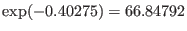 であり，33%程度の違いがあることになる（統計的に有意）。
モデルIIの推定結果は，テキストに掲載のSASによる推定結果と若干異なる。
Taichi Okumura